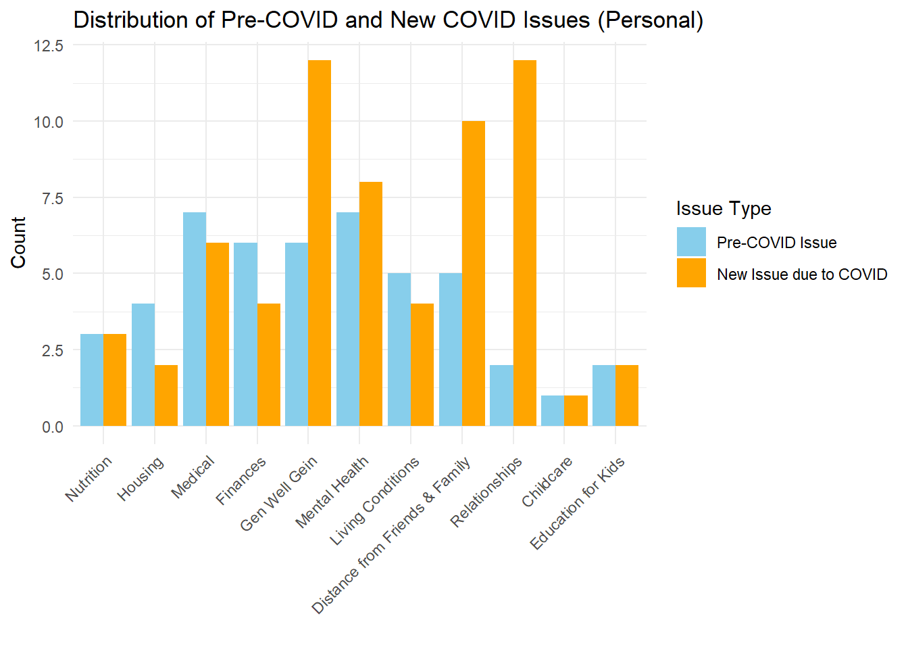
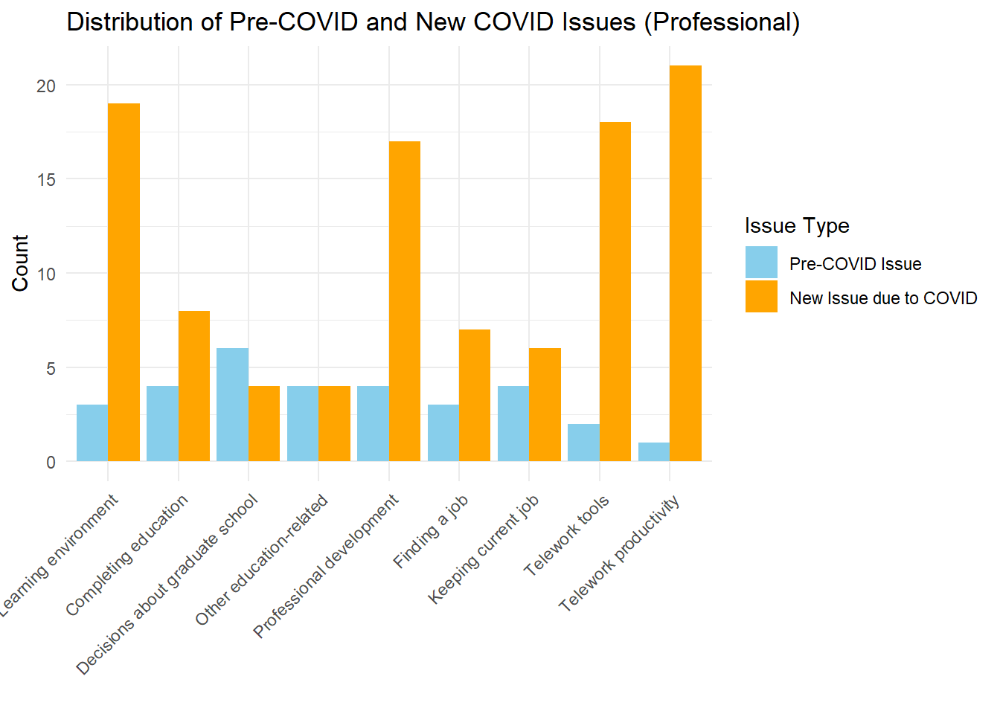
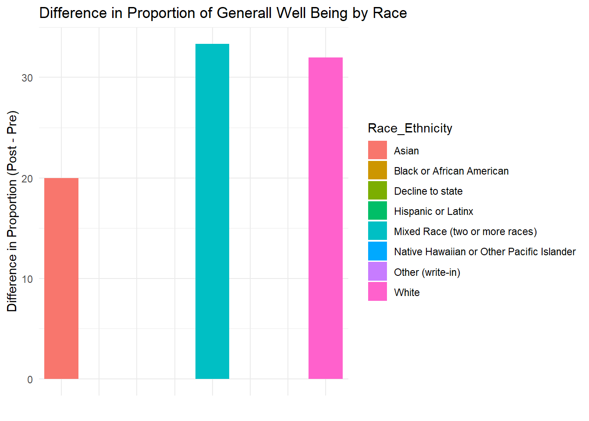

library(tidyverse)
library(tibble)
library(kableExtra)
data <- read.csv("data_snippet.csv")June 10-14 Activity
Play Around With Data
Some Major Takeaways Visualizations
personal_prefix <- "Currently..are.you.concerned.about.the.following....If.you.are.not..leave.blank...__________About......Personal.impacts..."
professional_prefix <- "Currently..are.you.concerned.about.the.following....If.you.are.not..leave.blank.....__________Abo......Academic.and.or.professional.impacts..."
remove_prefix <- function(column_name, prefix_to_remove) {
column_name <- gsub(prefix_to_remove, "", column_name)
return(column_name)
}
personal_concern_columns <- grep(personal_prefix, names(data), value = TRUE)
professional_concern_columns <- grep(professional_prefix, names(data), value = TRUE)
cleaned_personal_column_names <- lapply(personal_concern_columns, remove_prefix, prefix_to_remove = personal_prefix)
cleaned_professional_column_names <- lapply(professional_concern_columns, remove_prefix, prefix_to_remove = professional_prefix)
df_personal <- data[personal_concern_columns]
df_professional <- data[professional_concern_columns]
names(df_personal) <- cleaned_personal_column_names
names(df_professional) <- cleaned_professional_column_names# 0 - Not Concerned
# 1 - pre-covid issue
# 2 - new issue due to covid
# 3 - cannot access resources
head(df_personal) Food..nutrition Housing Health..medical Finances..paying.bills
1 1 1 1,2 1,2
2 0 0 0 0
3 0 0 2 0
4 0 2 2 2
5 0 0 0 1
6 0 0 1 1
General.well.being Mental.health Living.conditions
1 1,2 1,2 1
2 2 1,2 0
3 2 2 0
4 2 0 0
5 0 2 0
6 1 1 0
Distance.from.family..friends Relationships.with.others Childcare
1 1,2 1,2 0
2 2 2 0
3 2 0 0
4 2 0 0
5 1 2 0
6 0 2 0
Education.for.children
1 1,2
2 0
3 0
4 0
5 0
6 0head(df_professional) Learning.environment Completing.your.education
1 1,2 1,2
2 0 0
3 2 0
4 2 2
5 1 1
6 2 2
Decisions.about.graduate.school Education..other.
1 0 1,2
2 0 0
3 1 0
4 0 0
5 0 0
6 0 0
Professional.development..internships..programs..conferences. Finding.a.job
1 2 2
2 2,3 0
3 0 0
4 2 2
5 0 2
6 2 0
Keeping.your.current.job Telework.tools..internet..wifi..computer.
1 2 2
2 2 2
3 0 2
4 0 2
5 0 0
6 0 2
Telework.productivity Other..write.in. Other..write.in....Text
1 2 NA NA
2 2 NA NA
3 0 NA NA
4 2 NA NA
5 0 NA NA
6 0 NA NAaggregate_personal <- data.frame(
Pre_COVID_Count = colSums(df_personal == 1, na.rm = TRUE),
New_COVID_Count = colSums(df_personal == 2, na.rm = TRUE)
)
aggregate_professional <- data.frame(
Pre_COVID_Count = colSums(df_professional == 1, na.rm = TRUE),
New_COVID_Count = colSums(df_professional == 2, na.rm = TRUE)
)
filtered_aggregate_personal <- aggregate_personal[rowSums(aggregate_personal) > 0, ]
filtered_aggregate_professional <- aggregate_professional[rowSums(aggregate_professional) > 0, ]
tbl_personal <- as_tibble(filtered_aggregate_personal)
tbl_professional <- as_tibble(filtered_aggregate_professional)
styled_tbl_personal <- tbl_personal %>%
mutate(
Concern_Category = c("Nutrition", "Housing", "Medical", "Finances", "Gen Well Gein", "Mental Health", "Living Conditions", "Distance from Friends & Family", "Relationships", "Childcare", "Education for Kids"),
Difference = New_COVID_Count - Pre_COVID_Count
) %>%
select(Concern_Category, Pre_COVID_Count, New_COVID_Count, Difference) %>%
kable(., align = "c", caption = "Distribution of Pre-COVID and New COVID Issues (Personal)") %>%
kable_styling(full_width = FALSE)
styled_tbl_professional <- tbl_professional %>%
mutate(
Concern_Category = c("Learning environment", "Completing education", "Decisions about graduate school", "Other education-related", "Professional development", "Finding a job", "Keeping current job", "Telework tools", "Telework productivity"),
Difference = New_COVID_Count - Pre_COVID_Count
) %>%
select(Concern_Category, Pre_COVID_Count, New_COVID_Count, Difference) %>%
kable(., align = "c", caption = "Distribution of Pre-COVID and New COVID Issues (Professional)") %>%
kable_styling(full_width = FALSE)
styled_tbl_personal| Concern_Category | Pre_COVID_Count | New_COVID_Count | Difference |
|---|---|---|---|
| Nutrition | 3 | 3 | 0 |
| Housing | 4 | 2 | -2 |
| Medical | 7 | 6 | -1 |
| Finances | 6 | 4 | -2 |
| Gen Well Gein | 6 | 12 | 6 |
| Mental Health | 7 | 8 | 1 |
| Living Conditions | 5 | 4 | -1 |
| Distance from Friends & Family | 5 | 10 | 5 |
| Relationships | 2 | 12 | 10 |
| Childcare | 1 | 1 | 0 |
| Education for Kids | 2 | 2 | 0 |
styled_tbl_professional| Concern_Category | Pre_COVID_Count | New_COVID_Count | Difference |
|---|---|---|---|
| Learning environment | 3 | 19 | 16 |
| Completing education | 4 | 8 | 4 |
| Decisions about graduate school | 6 | 4 | -2 |
| Other education-related | 4 | 4 | 0 |
| Professional development | 4 | 17 | 13 |
| Finding a job | 3 | 7 | 4 |
| Keeping current job | 4 | 6 | 2 |
| Telework tools | 2 | 18 | 16 |
| Telework productivity | 1 | 21 | 20 |
personal_labels <- c("Nutrition", "Housing", "Medical", "Finances", "Gen Well Gein", "Mental Health", "Living Conditions", "Distance from Friends & Family", "Relationships", "Childcare", "Education for Kids")
df_personal_long <- filtered_aggregate_personal %>%
rownames_to_column(var = "Concern_Category") %>%
pivot_longer(cols = c("Pre_COVID_Count", "New_COVID_Count"),
names_to = "Type", values_to = "Count") %>%
mutate(Concern_Category = factor(Concern_Category,
levels = rownames(filtered_aggregate_personal),
labels = personal_labels))
type_order <- c("Pre_COVID_Count", "New_COVID_Count")
df_personal_long$Type <- factor(df_personal_long$Type, levels = type_order)
ggplot(df_personal_long, aes(x = Concern_Category, y = Count, fill = Type)) +
geom_bar(stat = "identity", position = position_dodge()) +
scale_fill_manual(values = c("skyblue", "orange"),
labels = c("Pre-COVID Issue", "New Issue due to COVID")) +
labs(title = "Distribution of Pre-COVID and New COVID Issues (Personal)",
x = "", y = "Count", fill = "Issue Type") +
theme_minimal() +
theme(axis.text.x = element_text(angle = 45, hjust = 1, vjust = 1))
professional_labels <- c("Learning environment", "Completing education", "Decisions about graduate school", "Other education-related", "Professional development", "Finding a job", "Keeping current job", "Telework tools", "Telework productivity")
df_professional_long <- filtered_aggregate_professional %>%
rownames_to_column(var = "Concern_Category") %>%
pivot_longer(cols = c("Pre_COVID_Count", "New_COVID_Count"),
names_to = "Type", values_to = "Count") %>%
mutate(Concern_Category = factor(Concern_Category,
levels = rownames(filtered_aggregate_professional),
labels = professional_labels))
type_order <- c("Pre_COVID_Count", "New_COVID_Count")
df_professional_long$Type <- factor(df_professional_long$Type, levels = type_order)
ggplot(df_professional_long, aes(x = Concern_Category, y = Count, fill = Type)) +
geom_bar(stat = "identity", position = position_dodge()) +
scale_fill_manual(values = c("skyblue", "orange"),
labels = c("Pre-COVID Issue", "New Issue due to COVID")) +
labs(title = "Distribution of Pre-COVID and New COVID Issues (Professional)",
x = "", y = "Count", fill = "Issue Type") +
theme_minimal() +
theme(axis.text.x = element_text(angle = 45, hjust = 1, vjust = 1))
Demographics Visualizations
race_ethnicity_counts <- data %>%
separate_rows(`What.is.your.race.and.or.ethnicity..Check.all.that.apply....Selected.Choice`, sep = ",") %>%
count(`What.is.your.race.and.or.ethnicity..Check.all.that.apply....Selected.Choice`, name = "count")
race_ethnicity_counts <- race_ethnicity_counts %>%
rename(race_ethnicity = `What.is.your.race.and.or.ethnicity..Check.all.that.apply....Selected.Choice`)
ggplot(race_ethnicity_counts, aes(x = reorder(race_ethnicity, -count), y = count)) +
geom_bar(stat = "identity") +
coord_flip() +
labs(title = "Demographic Makeup",
x = "Race/Ethnicity",
y = "Count") +
theme_minimal()
race_ethnicity_counts %>%
ggplot(aes(x = "", y = count, fill = race_ethnicity)) +
geom_bar(stat = "identity", width = 1) +
coord_polar("y") +
labs(title = "Demographic Makeup") +
theme_void() +
theme(legend.position = "right")
render_summary_table_graph <- function(df, column, category_name) {
total <- nrow(df)
summary_df <- df %>%
mutate({{column}} := ifelse({{column}} == "Genderfluid, Genderqueer, or Gender Non-conforming","Genderfluid/Genderqueer/Gender non-conforming", {{column}})) %>%
separate_rows({{column}}, sep = ",") %>%
count({{column}}, name = "count") %>%
mutate(percentage = round((count / total) * 100, 2)) %>%
rename(Category = {{column}}) %>%
arrange(desc(count))
summary_table <- kable(summary_df, format = "html", col.names = c(category_name, "Count", "Percentage (%)")) %>%
kable_styling(full_width = FALSE, bootstrap_options = c("striped", "hover", "condensed")) %>%
print(summary_table)
graph <- ggplot(summary_df, aes(x = reorder(Category, -count), y = count, fill = Category)) +
geom_bar(stat = "identity", color = "white", show.legend = FALSE) +
coord_flip() +
labs(title = paste(category_name, "Demographic Makeup"),
x = "",
y = "Count") +
theme_minimal(base_size = 15) +
theme(axis.title.x = element_text(margin = margin(t = 20)),
axis.title.y = element_text(margin = margin(r = 20)),
plot.title = element_text(hjust = 0.5, face = "bold", size = 18)) +
scale_fill_brewer(palette = "Set3")
return(list(summary_table = summary_table, graph = graph))
}
render_summary_table_graph(data, `What.is.your.race.and.or.ethnicity..Check.all.that.apply....Selected.Choice`, "Race/Ethnicity")<table class="table table-striped table-hover table-condensed" style="width: auto !important; margin-left: auto; margin-right: auto;">
<thead>
<tr>
<th style="text-align:left;"> Race/Ethnicity </th>
<th style="text-align:right;"> Count </th>
<th style="text-align:right;"> Percentage (%) </th>
</tr>
</thead>
<tbody>
<tr>
<td style="text-align:left;"> White </td>
<td style="text-align:right;"> 23 </td>
<td style="text-align:right;"> 63.89 </td>
</tr>
<tr>
<td style="text-align:left;"> Hispanic or Latinx </td>
<td style="text-align:right;"> 6 </td>
<td style="text-align:right;"> 16.67 </td>
</tr>
<tr>
<td style="text-align:left;"> Asian </td>
<td style="text-align:right;"> 5 </td>
<td style="text-align:right;"> 13.89 </td>
</tr>
<tr>
<td style="text-align:left;"> Black or African American </td>
<td style="text-align:right;"> 3 </td>
<td style="text-align:right;"> 8.33 </td>
</tr>
<tr>
<td style="text-align:left;"> Mixed Race (two or more races) </td>
<td style="text-align:right;"> 3 </td>
<td style="text-align:right;"> 8.33 </td>
</tr>
<tr>
<td style="text-align:left;"> Native Hawaiian or Other Pacific Islander </td>
<td style="text-align:right;"> 2 </td>
<td style="text-align:right;"> 5.56 </td>
</tr>
<tr>
<td style="text-align:left;"> Decline to state </td>
<td style="text-align:right;"> 1 </td>
<td style="text-align:right;"> 2.78 </td>
</tr>
<tr>
<td style="text-align:left;"> Other (write-in) </td>
<td style="text-align:right;"> 1 </td>
<td style="text-align:right;"> 2.78 </td>
</tr>
</tbody>
</table>$summary_table
NULL
$graph
render_summary_table_graph(data, `How.would.you.describe.yourself...Mark.one.answer....Selected.Choice`, "Gender Identity")<table class="table table-striped table-hover table-condensed" style="width: auto !important; margin-left: auto; margin-right: auto;">
<thead>
<tr>
<th style="text-align:left;"> Gender Identity </th>
<th style="text-align:right;"> Count </th>
<th style="text-align:right;"> Percentage (%) </th>
</tr>
</thead>
<tbody>
<tr>
<td style="text-align:left;"> Woman </td>
<td style="text-align:right;"> 20 </td>
<td style="text-align:right;"> 55.56 </td>
</tr>
<tr>
<td style="text-align:left;"> Man </td>
<td style="text-align:right;"> 14 </td>
<td style="text-align:right;"> 38.89 </td>
</tr>
<tr>
<td style="text-align:left;"> Decline to state </td>
<td style="text-align:right;"> 1 </td>
<td style="text-align:right;"> 2.78 </td>
</tr>
<tr>
<td style="text-align:left;"> Genderfluid/Genderqueer/Gender non-conforming </td>
<td style="text-align:right;"> 1 </td>
<td style="text-align:right;"> 2.78 </td>
</tr>
</tbody>
</table>$summary_table
NULL
$graph
# render_summary_table_graph(data, `Institution.Type`, "Institution Type")
render_summary_table_graph(data, Role, "Role")<table class="table table-striped table-hover table-condensed" style="width: auto !important; margin-left: auto; margin-right: auto;">
<thead>
<tr>
<th style="text-align:left;"> Role </th>
<th style="text-align:right;"> Count </th>
<th style="text-align:right;"> Percentage (%) </th>
</tr>
</thead>
<tbody>
<tr>
<td style="text-align:left;"> Faculty </td>
<td style="text-align:right;"> 14 </td>
<td style="text-align:right;"> 38.89 </td>
</tr>
<tr>
<td style="text-align:left;"> Graduate student (second-year or above) </td>
<td style="text-align:right;"> 13 </td>
<td style="text-align:right;"> 36.11 </td>
</tr>
<tr>
<td style="text-align:left;"> Employee (including Postdoctoral Scholars) </td>
<td style="text-align:right;"> 5 </td>
<td style="text-align:right;"> 13.89 </td>
</tr>
<tr>
<td style="text-align:left;"> First-year graduate student </td>
<td style="text-align:right;"> 3 </td>
<td style="text-align:right;"> 8.33 </td>
</tr>
<tr>
<td style="text-align:left;"> Undergraduate </td>
<td style="text-align:right;"> 1 </td>
<td style="text-align:right;"> 2.78 </td>
</tr>
</tbody>
</table>$summary_table
NULL
$graphlibrary(htmltools)
generate_summary_table <- function(df, column, category_name) {
total <- nrow(df)
# Handling specific category name issue
summary_df <- df %>%
mutate({{column}} := ifelse({{column}} == "Genderfluid, Genderqueer, or Gender Non-conforming","Gender fluid/queer/non-conforming", {{column}})) %>%
separate_rows({{column}}, sep = ",") %>%
count({{column}}, name = "count") %>%
mutate(percentage = round((count / total) * 100, 2)) %>%
rename(Category = {{column}}) %>%
arrange(desc(count))
return(summary_df)
}
summary_df_race_ethnicity <- generate_summary_table(data, `What.is.your.race.and.or.ethnicity..Check.all.that.apply....Selected.Choice`, "Race/Ethnicity")
summary_df_gender_identity <- generate_summary_table(data, `How.would.you.describe.yourself...Mark.one.answer....Selected.Choice`, "Gender Identity")
summary_df_role <- generate_summary_table(data, Role, "Role")
formatted_table_race_ethnicity <- summary_df_race_ethnicity %>%
kable(format = "html", col.names = c("Race/Ethnicity", "Count", "Percentage (%)")) %>%
kable_styling(full_width = FALSE, bootstrap_options = c("striped", "hover", "condensed")) %>%
column_spec(1, width = "20%") %>%
column_spec(2:3, width = "10%", extra_css = "text-align: right;")
formatted_table_gender_identity <- summary_df_gender_identity %>%
kable(format = "html", col.names = c("Gender Identity", "Count", "Percentage (%)")) %>%
kable_styling(full_width = FALSE, bootstrap_options = c("striped", "hover", "condensed")) %>%
column_spec(1, width = "20%") %>%
column_spec(2:3, width = "10%", extra_css = "text-align: right;")
formatted_table_role <- summary_df_role %>%
kable(format = "html", col.names = c("Role", "Count", "Percentage (%)")) %>%
kable_styling(full_width = FALSE, bootstrap_options = c("striped", "hover", "condensed")) %>%
column_spec(1, width = "20%") %>%
column_spec(2:3, width = "10%", extra_css = "text-align: right;")
combined_table <- paste(
"<h1 style='text-align: center;'>Demographics</h1>",
"<br>",
as.character(formatted_table_race_ethnicity),
"<br>",
as.character(formatted_table_gender_identity),
"<br>",
as.character(formatted_table_role),
sep = ""
)
HTML(combined_table)Demographics
| Race/Ethnicity | Count | Percentage (%) |
|---|---|---|
| White | 23 | 63.89 |
| Hispanic or Latinx | 6 | 16.67 |
| Asian | 5 | 13.89 |
| Black or African American | 3 | 8.33 |
| Mixed Race (two or more races) | 3 | 8.33 |
| Native Hawaiian or Other Pacific Islander | 2 | 5.56 |
| Decline to state | 1 | 2.78 |
| Other (write-in) | 1 | 2.78 |
| Gender Identity | Count | Percentage (%) |
|---|---|---|
| Woman | 20 | 55.56 |
| Man | 14 | 38.89 |
| Decline to state | 1 | 2.78 |
| Gender fluid/queer/non-conforming | 1 | 2.78 |
| Role | Count | Percentage (%) |
|---|---|---|
| Faculty | 14 | 38.89 |
| Graduate student (second-year or above) | 13 | 36.11 |
| Employee (including Postdoctoral Scholars) | 5 | 13.89 |
| First-year graduate student | 3 | 8.33 |
| Undergraduate | 1 | 2.78 |
Faceting
personal_prefix <- "Currently..are.you.concerned.about.the.following....If.you.are.not..leave.blank...__________About......Personal.impacts..."
professional_prefix <- "Currently..are.you.concerned.about.the.following....If.you.are.not..leave.blank.....__________Abo......Academic.and.or.professional.impacts..."
race_prefix <- 'What.is.your.race.and.or.ethnicity..Check.all.that.apply....Selected.Choice'
remove_prefix <- function(column_name, prefix_to_remove) {
column_name <- gsub(prefix_to_remove, "", column_name)
return(column_name)
}
personal_concern_columns <- grep(personal_prefix, names(data), value = TRUE)
professional_concern_columns <- grep(professional_prefix, names(data), value = TRUE)
race_columns <- grep(race_prefix, names(data), value = TRUE)
cleaned_personal_column_names <- lapply(personal_concern_columns, remove_prefix, prefix_to_remove = personal_prefix)
cleaned_professional_column_names <- lapply(professional_concern_columns, remove_prefix, prefix_to_remove = professional_prefix)
df_personal <- data[c(personal_concern_columns, race_columns)]
df_professional <- data[c(professional_concern_columns,race_columns)]
names(df_personal) <- c(cleaned_personal_column_names, 'Race_Ethnicity')
names(df_professional) <- c(cleaned_professional_column_names, 'Race_Ethnicity')head(df_personal) Food..nutrition Housing Health..medical Finances..paying.bills
1 1 1 1,2 1,2
2 0 0 0 0
3 0 0 2 0
4 0 2 2 2
5 0 0 0 1
6 0 0 1 1
General.well.being Mental.health Living.conditions
1 1,2 1,2 1
2 2 1,2 0
3 2 2 0
4 2 0 0
5 0 2 0
6 1 1 0
Distance.from.family..friends Relationships.with.others Childcare
1 1,2 1,2 0
2 2 2 0
3 2 0 0
4 2 0 0
5 1 2 0
6 0 2 0
Education.for.children Race_Ethnicity
1 1,2 White
2 0 White
3 0 White
4 0 Hispanic or Latinx
5 0 Hispanic or Latinx
6 0 Hispanic or Latinxdf_personal[] <- lapply(df_personal[], as.character)
personal_data_long <- df_personal %>%
mutate(id = row_number()) %>%
separate_rows(General.well.being, sep = ",") %>%
separate_rows(Race_Ethnicity, sep = ",") %>%
mutate(General.well.being = as.integer(General.well.being))
concern_counts <- personal_data_long %>%
group_by(Race_Ethnicity) %>%
summarize(
pre_covid = sum(General.well.being == 1),
post_covid = sum(General.well.being == 2)
)
concern_counts <- concern_counts %>%
mutate(difference = post_covid - pre_covid)
ggplot(concern_counts, aes(x = difference, y = difference, fill = Race_Ethnicity)) +
geom_bar(stat = "identity") +
labs(title = "Difference in Post-Pre COVID Concerns for General Well-being by Race/Ethnicity",
x = "Race/Ethnicity",
y = "Difference in Concerns (Post - Pre)") +
theme_minimal() +
theme(axis.text.y = element_blank())concern_counts %>%
kable(col.names = c("Race/Ethnicity", "Pre-COVID Concerns", "Post-COVID Concerns", "Difference (Post - Pre)"),
caption = "Difference in Post-Pre COVID Concerns for General Well-being by Race/Ethnicity") %>%
kable_styling(bootstrap_options = c("striped", "hover", "condensed", "responsive"))| Race/Ethnicity | Pre-COVID Concerns | Post-COVID Concerns | Difference (Post - Pre) |
|---|---|---|---|
| Asian | 1 | 2 | 1 |
| Black or African American | 1 | 1 | 0 |
| Decline to state | 0 | 0 | 0 |
| Hispanic or Latinx | 2 | 2 | 0 |
| Mixed Race (two or more races) | 1 | 2 | 1 |
| Native Hawaiian or Other Pacific Islander | 1 | 1 | 0 |
| Other (write-in) | 0 | 0 | 0 |
| White | 4 | 12 | 8 |
df_professional[] <- lapply(df_professional[], as.character)
personal_data_long <- df_professional %>%
mutate(id = row_number()) %>%
separate_rows(Professional.development..internships..programs..conferences., sep = ",") %>%
separate_rows(Race_Ethnicity, sep = ",") %>%
mutate(General.well.being = as.integer(Professional.development..internships..programs..conferences.))
total_counts <- personal_data_long %>%
group_by(Race_Ethnicity) %>%
summarize(total = n())
concern_counts <- personal_data_long %>%
group_by(Race_Ethnicity) %>%
summarize(
pre_covid = sum(Professional.development..internships..programs..conferences. == 1),
post_covid = sum(Professional.development..internships..programs..conferences. == 2)
) %>%
left_join(total_counts, by = "Race_Ethnicity") %>%
mutate(
pre_covid_prop = round((pre_covid / total) * 100, 2),
post_covid_prop = round((post_covid / total) * 100, 2),
difference = round(post_covid_prop - pre_covid_prop, 2)
)
concern_counts %>%
select(Race_Ethnicity, pre_covid_prop, post_covid_prop, difference) %>%
kable(col.names = c("Race/Ethnicity", "Pre-COVID Proportion (%)", "Post-COVID Proportion (%)", "Difference (Post - Pre)"),
caption = "Difference in Post-Pre COVID Concerns for Professional Development (Proportions)") %>%
kable_styling(bootstrap_options = c("striped", "hover", "condensed", "responsive"))| Race/Ethnicity | Pre-COVID Proportion (%) | Post-COVID Proportion (%) | Difference (Post - Pre) |
|---|---|---|---|
| Asian | 37.50 | 37.50 | 0.00 |
| Black or African American | 66.67 | 33.33 | -33.34 |
| Decline to state | 0.00 | 100.00 | 100.00 |
| Hispanic or Latinx | 0.00 | 66.67 | 66.67 |
| Mixed Race (two or more races) | 33.33 | 50.00 | 16.67 |
| Native Hawaiian or Other Pacific Islander | 50.00 | 50.00 | 0.00 |
| Other (write-in) | 0.00 | 50.00 | 50.00 |
| White | 11.54 | 61.54 | 50.00 |
ggplot(concern_counts, aes(x = Race_Ethnicity, y = difference, fill = Race_Ethnicity)) +
geom_bar(stat = "identity") +
labs(title = "Difference in Proportion of Professional Development by Race",
x = "", y = "Difference in Proportion (Post - Pre)") +
theme_minimal() +
theme(axis.text.x=element_blank(),
axis.ticks.x=element_blank())
df_personal[] <- lapply(df_personal[], as.character)
personal_data_long <- df_personal %>%
mutate(id = row_number()) %>%
separate_rows(General.well.being, sep = ",") %>%
separate_rows(Race_Ethnicity, sep = ",") %>%
mutate(General.well.being = as.integer(General.well.being))
total_counts <- personal_data_long %>%
group_by(Race_Ethnicity) %>%
summarize(total = n())
concern_counts <- personal_data_long %>%
group_by(Race_Ethnicity) %>%
summarize(
pre_covid = sum(General.well.being == 1),
post_covid = sum(General.well.being == 2)
) %>%
left_join(total_counts, by = "Race_Ethnicity") %>%
mutate(
pre_covid_prop = round((pre_covid / total) * 100, 2),
post_covid_prop = round((post_covid / total) * 100, 2),
difference = round(post_covid_prop - pre_covid_prop, 2)
)
concern_counts %>%
select(Race_Ethnicity, pre_covid_prop, post_covid_prop, difference) %>%
kable(col.names = c("Race/Ethnicity", "Pre-COVID Proportion (%)", "Post-COVID Proportion (%)", "Difference (Post - Pre)"),
caption = "Difference in Post-Pre COVID Concerns for General Well-being by Race/Ethnicity (Proportions)") %>%
kable_styling(bootstrap_options = c("striped", "hover", "condensed", "responsive"))| Race/Ethnicity | Pre-COVID Proportion (%) | Post-COVID Proportion (%) | Difference (Post - Pre) |
|---|---|---|---|
| Asian | 20.00 | 40.00 | 20.00 |
| Black or African American | 33.33 | 33.33 | 0.00 |
| Decline to state | 0.00 | 0.00 | 0.00 |
| Hispanic or Latinx | 33.33 | 33.33 | 0.00 |
| Mixed Race (two or more races) | 33.33 | 66.67 | 33.34 |
| Native Hawaiian or Other Pacific Islander | 50.00 | 50.00 | 0.00 |
| Other (write-in) | 0.00 | 0.00 | 0.00 |
| White | 16.00 | 48.00 | 32.00 |
ggplot(concern_counts, aes(x = Race_Ethnicity, y = difference, fill = Race_Ethnicity)) +
geom_bar(stat = "identity") +
labs(title = "Difference in Proportion of Generall Well Being by Race",
x = "", y = "Difference in Proportion (Post - Pre)") +
theme_minimal() +
theme(axis.text.x=element_blank(),
axis.ticks.x=element_blank())
Try By Role
personal_prefix <- "Currently..are.you.concerned.about.the.following....If.you.are.not..leave.blank...__________About......Personal.impacts..."
professional_prefix <- "Currently..are.you.concerned.about.the.following....If.you.are.not..leave.blank.....__________Abo......Academic.and.or.professional.impacts..."
remove_prefix <- function(column_name, prefix_to_remove) {
column_name <- gsub(prefix_to_remove, "", column_name)
return(column_name)
}
personal_concern_columns <- grep(personal_prefix, names(data), value = TRUE)
professional_concern_columns <- grep(professional_prefix, names(data), value = TRUE)
cleaned_personal_column_names <- lapply(personal_concern_columns, remove_prefix, prefix_to_remove = personal_prefix)
cleaned_professional_column_names <- lapply(professional_concern_columns, remove_prefix, prefix_to_remove = professional_prefix)
df_personal <- data[c(personal_concern_columns, "Role")]
df_professional <- data[c(professional_concern_columns,"Role")]
names(df_personal) <- c(cleaned_personal_column_names, 'Role')
names(df_professional) <- c(cleaned_professional_column_names, 'Role')df_professional <- df_professional %>%
select(-starts_with("Other..write.in."))
professional_labels <- c("Learning environment", "Completing education", "Decisions about graduate school", "Other education-related", "Professional development", "Finding a job", "Keeping current job", "Telework tools", "Telework productivity")
df_professional[] <- lapply(df_professional[], as.character)
professional_columns <- names(df_professional)[-which(names(df_professional) == "Role")]
personal_data_long <- df_professional %>%
mutate(id = row_number()) %>%
separate_rows(Role, sep = ",") %>%
pivot_longer(cols = all_of(professional_columns),
names_to = "Professional_Development",
values_to = "Concern",) %>%
separate_rows(Concern, sep = ",") %>%
mutate(Concern = as.integer(Concern)) %>%
mutate(Professional_Development = recode(Professional_Development, !!!setNames(professional_labels, professional_columns)))
total_counts <- personal_data_long %>%
group_by(Role, Professional_Development) %>%
summarize(total = n(), .groups = 'drop')
concern_counts <- personal_data_long %>%
group_by(Role, Professional_Development) %>%
summarize(
pre_covid = sum(Concern == 1),
post_covid = sum(Concern == 2),
.groups = 'drop'
) %>%
left_join(total_counts, by = c("Role", "Professional_Development")) %>%
mutate(
pre_covid_prop = round((pre_covid / total) * 100, 2),
post_covid_prop = round((post_covid / total) * 100, 2),
difference = round(post_covid_prop - pre_covid_prop, 2)
)
concern_counts %>%
select(Role, Professional_Development, pre_covid_prop, post_covid_prop, difference) %>%
kable(col.names = c("Role", "Professional Development", "Pre-COVID Proportion (%)", "Post-COVID Proportion (%)", "Difference (Post - Pre)"),
caption = "Difference in Post-Pre COVID Concerns for Professional Development (Proportions)") %>%
kable_styling(bootstrap_options = c("striped", "hover", "condensed", "responsive"))| Role | Professional Development | Pre-COVID Proportion (%) | Post-COVID Proportion (%) | Difference (Post - Pre) |
|---|---|---|---|---|
| Employee (including Postdoctoral Scholars) | Completing education | 0.00 | 0.00 | 0.00 |
| Employee (including Postdoctoral Scholars) | Decisions about graduate school | 0.00 | 0.00 | 0.00 |
| Employee (including Postdoctoral Scholars) | Finding a job | 14.29 | 14.29 | 0.00 |
| Employee (including Postdoctoral Scholars) | Keeping current job | 14.29 | 28.57 | 14.28 |
| Employee (including Postdoctoral Scholars) | Learning environment | 0.00 | 20.00 | 20.00 |
| Employee (including Postdoctoral Scholars) | Other education-related | 0.00 | 0.00 | 0.00 |
| Employee (including Postdoctoral Scholars) | Professional development | 12.50 | 50.00 | 37.50 |
| Employee (including Postdoctoral Scholars) | Telework productivity | 14.29 | 71.43 | 57.14 |
| Employee (including Postdoctoral Scholars) | Telework tools | 0.00 | 60.00 | 60.00 |
| Faculty | Completing education | 14.29 | 7.14 | -7.15 |
| Faculty | Decisions about graduate school | 28.57 | 0.00 | -28.57 |
| Faculty | Finding a job | 7.14 | 14.29 | 7.15 |
| Faculty | Keeping current job | 21.43 | 28.57 | 7.14 |
| Faculty | Learning environment | 13.33 | 73.33 | 60.00 |
| Faculty | Other education-related | 14.29 | 21.43 | 7.14 |
| Faculty | Professional development | 23.53 | 41.18 | 17.65 |
| Faculty | Telework productivity | 6.67 | 46.67 | 40.00 |
| Faculty | Telework tools | 13.33 | 53.33 | 40.00 |
| First-year graduate student | Completing education | 25.00 | 50.00 | 25.00 |
| First-year graduate student | Decisions about graduate school | 0.00 | 33.33 | 33.33 |
| First-year graduate student | Finding a job | 33.33 | 0.00 | -33.33 |
| First-year graduate student | Keeping current job | 33.33 | 0.00 | -33.33 |
| First-year graduate student | Learning environment | 33.33 | 33.33 | 0.00 |
| First-year graduate student | Other education-related | 0.00 | 0.00 | 0.00 |
| First-year graduate student | Professional development | 33.33 | 33.33 | 0.00 |
| First-year graduate student | Telework productivity | 50.00 | 50.00 | 0.00 |
| First-year graduate student | Telework tools | 33.33 | 0.00 | -33.33 |
| Graduate student (second-year or above) | Completing education | 21.43 | 50.00 | 28.57 |
| Graduate student (second-year or above) | Decisions about graduate school | 7.69 | 23.08 | 15.39 |
| Graduate student (second-year or above) | Finding a job | 14.29 | 42.86 | 28.57 |
| Graduate student (second-year or above) | Keeping current job | 0.00 | 7.69 | 7.69 |
| Graduate student (second-year or above) | Learning environment | 13.33 | 53.33 | 40.00 |
| Graduate student (second-year or above) | Other education-related | 20.00 | 20.00 | 0.00 |
| Graduate student (second-year or above) | Professional development | 7.14 | 71.43 | 64.29 |
| Graduate student (second-year or above) | Telework productivity | 0.00 | 76.92 | 76.92 |
| Graduate student (second-year or above) | Telework tools | 0.00 | 53.85 | 53.85 |
| Undergraduate | Completing education | 0.00 | 0.00 | 0.00 |
| Undergraduate | Decisions about graduate school | 100.00 | 0.00 | -100.00 |
| Undergraduate | Finding a job | 0.00 | 0.00 | 0.00 |
| Undergraduate | Keeping current job | 0.00 | 0.00 | 0.00 |
| Undergraduate | Learning environment | 0.00 | 100.00 | 100.00 |
| Undergraduate | Other education-related | 0.00 | 50.00 | 50.00 |
| Undergraduate | Professional development | 50.00 | 50.00 | 0.00 |
| Undergraduate | Telework productivity | 0.00 | 50.00 | 50.00 |
| Undergraduate | Telework tools | 0.00 | 100.00 | 100.00 |
ggplot(concern_counts, aes(x = Role, y = difference, fill = Role)) +
geom_bar(stat = "identity") +
facet_wrap(~ Professional_Development, scales = "free_y") +
labs(title = "Difference in Proportion of COVID Concerns by Role Faceted by Professional Devlopement Category",
x = "Role", y = "Difference in Proportion (Post - Pre)") +
theme_minimal() +
# theme(axis.text.x = element_text(angle = 45, hjust = 1, vjust = 1),
# legend.position = "none")
theme(axis.text.x=element_blank(),
axis.ticks.x=element_blank())ggplot(concern_counts, aes(x = Professional_Development, y = difference, fill = Professional_Development)) +
geom_bar(stat = "identity") +
facet_wrap(~ Role, scales = "free_y") +
labs(title = "Difference in Proportion of COVID Concerns by Professional Development Category Faceted by Role",
x = "", y = "Difference in Proportion (Post - Pre)") +
theme_minimal() +
theme(axis.text.x=element_blank(),
axis.ticks.x=element_blank())ggplot(concern_counts, aes(x = Professional_Development, y = difference, fill = Role)) +
geom_bar(stat = "identity", position = "dodge2") +
labs(title = "Difference in Proportion of COVID Concerns by Professional Development Category and Role",
x = "", y = "Difference in Proportion (Post - Pre)") +
theme_minimal() +
theme(axis.text.x = element_text(angle = 45, hjust = 1, vjust = 1))